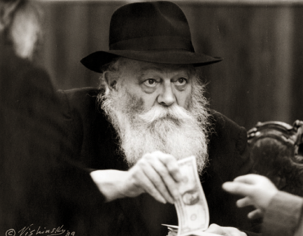

A Dollar “For Ireland”
“I changed out of my nun’s clothes and made my way to 770 Eastern Parkway in Brooklyn. I waited for a lengthy period of time, as many women stood in front of me and behind me in a long line. When my turn finally came, the Rebbe handed me a dollar, and within in an instant, I found myself heading outside. Suddenly and totally unexpectedly, the Rebbe called me back. He handed me another dollar as he said, ‘This is for Ireland.’ I was positively thunderstruck. How did he know?” An amazing story about “the rabbi whose headquarters is Beis Moshiach,” as told by someone whose son had heard it first-hand.

“From your outward appearance, you must be a Jew. Do I assume correctly?” The Catholic nun sitting in a prestigious real estate office in Philadelphia, managed together with other local church officials, had posed the question to Tzvi, a young man from the Chabad House who had come there to conduct some business affairs.
“Yes, I am,” Tzvi replied, as he instinctively straightened the yarmulke on his head.
“And would you happen to know Rabbi Schneersohn?” she added.
“Of course,” Tzvi confirmed. “My parents live in Crown Heights, Brooklyn.”
The nun was clearly pleased by the young man’s answer. “If so, I’d like you to hear a story about the rabbi…”
Tzvi happily agreed. He listened most attentively as the nun began to tell her story:
“This took place more than twenty years ago. As part of the business affairs I conduct with my other partners, I periodically travel to our branch in Ireland to get an up-close look on how it runs. The branch manager also serves as a Catholic priest.
“On one occasion when I traveled to meet with him and receive a report on the business’ condition, he surprisingly asked to take a break for a few minutes in the middle of a conference. I was curious to know why he wanted to leave and what he was doing. I followed him and saw that he went into one of the rooms, leaving the door slightly ajar.
“When I took a peek inside, I saw a bizarre sight. The priest sat, wearing black boxes with dark straps around his head and his arm, and wrapped in a strange white and slightly yellowing garment.
“In my youth, I had been raised in the Bronx, where I was acquainted with Jews, and I once even participated in what was called a bar-mitzvah celebration. When I grew older, I also spent some time working as a Shabbos Goya and I knew a little about the traditional Jewish lifestyle. I was aware that he was wearing the t’fillin that Jews customarily prayed with, and my surprise was naturally quite great.
“About fifteen minutes later, when the priest left the room and returned to his office, I couldn’t restrain myself and I told him what I had seen. ‘Can you explain the meaning of all this?’ I asked.
“He understood exactly what I meant, and he replied: ‘I’m about to tell you something that will astonish you. A few weeks ago, I had a dream: I saw a majestic-looking rabbi, who came up to me and said, ‘You are a Jew, and you have to return to your Jewish roots.’
“‘When I recalled the dream after waking up the next morning, I didn’t know how to relate to it.
“‘The rabbi’s words hit me like a bolt out of the blue. I hesitated for a moment, but I immediately pushed them aside. Since when do I take such dreams seriously? I said to myself, and I soon forgot about the whole thing.
“‘However, when the vision repeated itself several times, it began to trouble me. I wasn’t used to recurring dreams, especially not dreams about Jewish rabbis.
“‘I had never paid much attention to dreams until then, particularly those that threatened to turn my world upside down. However, when this rabbi virtually became a nightly visitor in my dreams, I just couldn’t treat this phenomenon with indifference.
“‘I realized that there was something serious going on here, and acting as if nothing unusual was happening was simply not an option. It was clear that I had to check my family history. I went to the elder priests, and after a thorough investigation, I confirmed what I already knew: I had been brought to a Christian orphanage when I was four and a half years old. However, there was another critical detail that I hadn’t known before: My parents were Jewish, and they had brought me there during the Holocaust. What the rabbi had told me in my dream was really true!
“‘Slowly but surely, I began to digest this incredible revelation. It wasn’t long before I acquired a tallis and t’fillin, and soon I was learning how to pray like a Jew. I know that this must come as a great shock to you, but these are the facts. I am considering a return to my Jewish roots as the first step towards leaving the church and my clerical position!’
“The priest concluded his amazing story, leaving me totally speechless,” the nun continued, as Tzvi listened to her breathtaking account. “As you can understand, my innate curiosity would not rest, and I immediately asked him, ‘Do you know the identity of the rabbi who came to you in a dream? Is he alive? Where does he live?’
“‘You won’t believe it,’ the Jewish priest replied. ‘One day, I was watching television during the Jewish holiday of Chanukah. The screen showed a menorah lighting ceremony at the headquarters of the Lubavitcher Rebbe, who resides in the Crown Heights section of Brooklyn, New York. Suddenly, I noticed something amazing that absolutely stunned me. The camera focused on the rabbi standing on the platform, and I immediately recognized him as the one who came to me in my dreams!’”
“I wrote down all the contact information,” the Catholic nun told Tzvi, “and I returned to Philadelphia. Then one day, when my business affairs brought me to Brooklyn, I called the rabbi’s office and asked if I could have a meeting with him. The secretary told me that it’s no longer possible to arrange private audiences with the Grand Rabbi. However, if I was interested, I could come on Sunday, when he distributes dollars to all those who wish to see him. I decided to come, dressed in regular clothes instead of my customary uniform. I made my way to 770 Eastern Parkway, where I had been told the rabbi’s center was located.
“I waited for a lengthy period of time, as many women stood in front of me and even more behind me in a long line. When my turn finally came, the rabbi handed me a dollar, and within in an instant, I found myself heading outside. Suddenly and totally unexpectedly, he called me back. He handed me another dollar as he said, ‘This is for Ireland.’
“I was positively thunderstruck. How did he know?”
“It was immediately clear to me that the second dollar was meant for the Jewish priest from Ireland. At the very first opportunity, I gave him the dollar, sent personally from the rabbi who had appeared to him in a dream. I firmly believe that the dollar was a source of tremendous strength for him as he journeyed along his ‘new-old’ path in life.
“As I told you earlier, I inquired a little about the rabbi,” the nun said as she finished her story. You surely must know that his house, where he gave me the dollars, is Beis Moshiach…”
[I heard this unique story from a number of sources. Afterwards, I turned to Rabbi Moshe Bogomilsky, whose son had heard it first-hand, and he agreed to repeat the story again in greater detail. – C.B.]
Brook. "A Dollar “For Ireland”." Beis Moshiach, no. 916 (February 19, 2014).